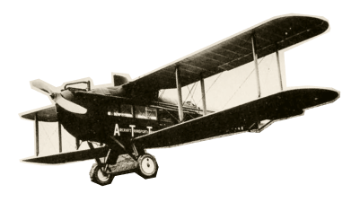

Дело помощи утопающим — дело рук самих утопающих!
Шахматы двигают вперед не только культуру, но и экономику!
Лед тронулся, господа присяжные заседатели!
Дело помощи утопающим — дело рук самих утопающих!
Шахматы двигают вперед не только культуру, но и экономику!
Лед тронулся, господа присяжные заседатели!
Чтобы поддержать Международный васюкинский турнир посетите лекцию на тему:
«Плодотворная дебютная идея»
посетите лекцию на тему:
«Плодотворная дебютная идея»

и Сеанс одновременной игры в шахматы на 160 досках гроссмейстера О. Бендера
| Место проведения: | Клуб «Картонахник» |
|---|---|
| Дата и время мероприятия: | 22 июня 1927 г. в 18:00 |
| Стоимость входных билетов: | 20 коп. |
| Плата за игру: | 50 коп. |
| Взнос на телеграммы: | 100 руб. 21 руб. 16 коп. |
По всем вопросам обращаться в администрацию к К. Михельсону
Этапы преображения ВасюковБудущие источники обогащения васюкинцев

1
Строительство железнодорожной магистрали Москва-Васюки
2
Открытие фешенебельной гостиницы «Проходная пешка» и других небоскрёбов
3
Поднятие сельского хозяйства в радиусе на тысячу километров: производство овощей, фруктов, икры, шоколадных конфет
4
Строительство дворца для турнира
5
Размещение гаражей для гостевого
автотранспорта
6
Постройка сверхмощной радиостанции для передачи всему миру сенсационных результатов
7
Создание аэропорта «Большие Васюки» с регулярным отправлением почтовых самолётов и дирижаблей во все концы света, включая Лос-Анжелос и Мельбурн
Участники турнира
Дело помощи утопающим — дело рук самих утопающих!
Шахматы двигают вперед не только культуру, но и экономику!
Лед тронулся, господа присяжные заседатели!
Дело помощи утопающим — дело рук самих утопающих!
Шахматы двигают вперед не только культуру, но и экономику!
Лед тронулся, господа присяжные заседатели!